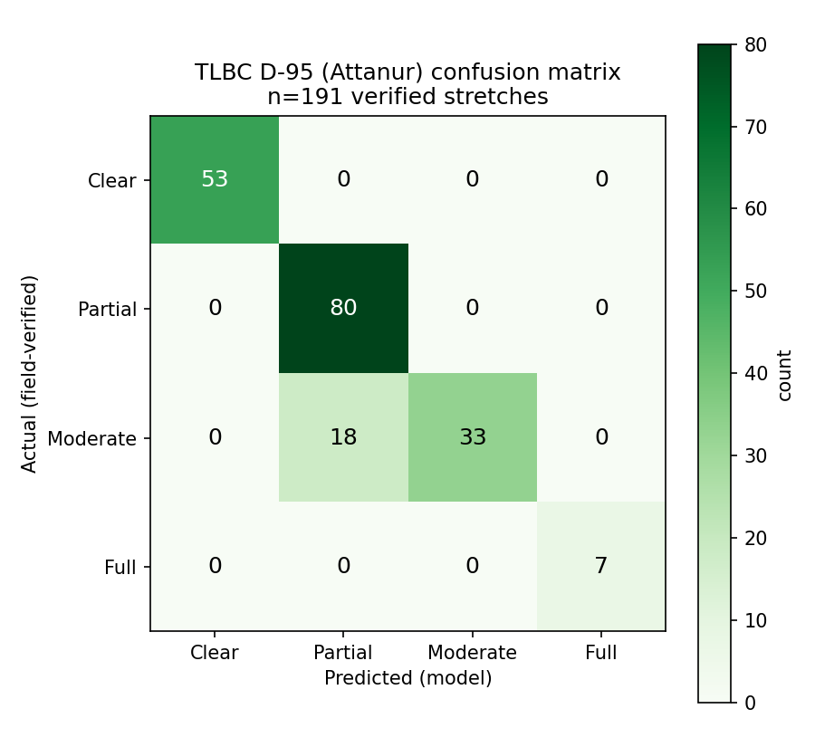
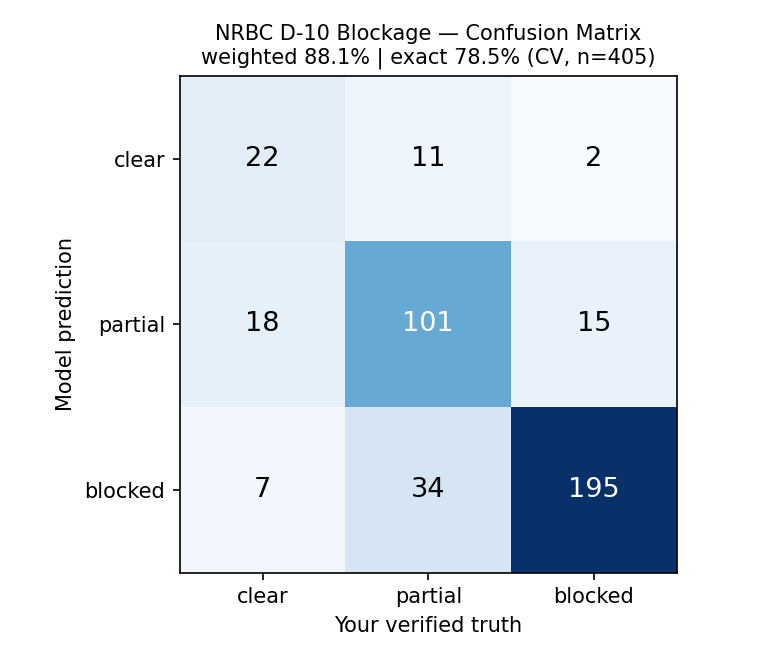
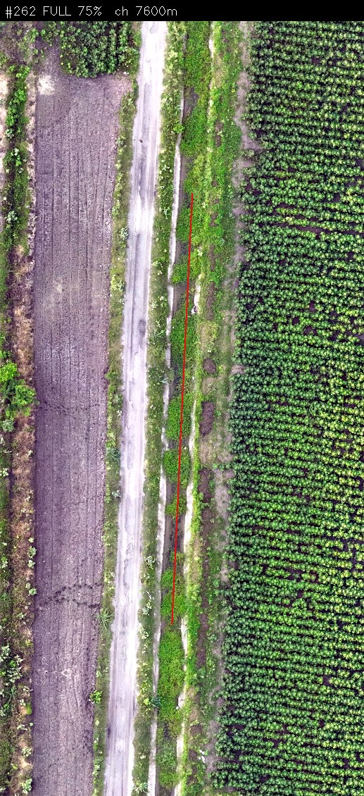

Areas: TLBC D‑95 (Attanur, Shakapur) and NRBC D‑10, Raichur, Karnataka | Data: drone orthophotos + elevation models (DSM/DTM) | Report date: 9 July 2026
The pipeline processes drone photography and elevation data to detect every canal stretch, classify vegetation blockage, quantify sediment depth, and flag structural damage. Results are delivered as a clickable map, with each stretch linked to its chainage, classification, and close-up photo.
| Metric | Value |
|---|---|
| Drone imagery coverage (Attanur & Shakapur) | ~51 km², 5 tiles |
| TLBC centreline mapped | 16.0 km, 322 stretches |
| TLBC stretches field-verified to date | 191 |
| NRBC centreline mapped (precision re-survey) | 22.4 km, 454 stretches |
| Canal detection accuracy (overlap score) | 89%, up from 32% at first attempt |
Manual bank inspection is infrequent and undocumented, so blockage and damage typically go unrecorded between visits. A drone survey covers the full network in a single pass and produces a comparable record over time.
Both systems are in Raichur district: TLBC D‑95, covering the Attanur and Shakapur command area, and NRBC D‑10. For each, a drone flight produced two data layers: a true-colour orthophoto at sub-5 cm resolution, and a paired elevation model (DSM/DTM) used to measure sediment depth.
| Tile | Area | Resolution |
|---|---|---|
| Attanur 1 | 3.6 km² | 4.6 cm/px |
| Attanur 2 | 23.4 km² | 4.6 cm/px |
| Attanur 3 | 18.7 km² | 4.6 cm/px |
| Attanur 4 | 1.0 km² | 3.5 cm/px |
| Shakapur | 4.4 km² | 3.4 cm/px |
Detection ran on the five orthophoto tiles listed in Section 2 (Attanur 1–4 and Shakapur), covering roughly 51 km² of the TLBC D‑95 command area at sub-5 cm resolution. These true-colour drone images are the same source imagery used for every later stage, from the classical pre-processing pass below through to the final trained model and per-stretch classification.
Detection also started from a client-provided canal network shapefile (TLBC_D95.shp), containing two
reference lines, TLBC main canal and Distributary‑95, together spanning the full ~16 km network. This
shapefile supplied the initial centreline geometry, which was later realigned in GIS onto the true channel and split
into the 322 stretches used for classification.
Canal detection uses a UNet segmentation model with a ResNet‑34 encoder, trained on 512×512 image patches sampled directly from the orthophotos, with a combined Focal + Dice + Boundary loss. Training data was built from 200 hand-annotated patches (49 positive, 151 negative), labelled in LabelMe using model-guided patch selection. A concrete canal wall and a bare field edge can present near-identical spectral signatures in a single photo, which makes this a difficult classification task in practice.
Before the neural network stage, an initial classical computer-vision pass separated vegetation, concrete, and soil using the VARI spectral index, then extracted candidate canal shapes with thresholding, morphological filtering, skeletonisation, and a distance transform to measure width; this baseline also guided where to sample patches for manual annotation. Its brightness/greyness/low-VARI thresholds for concrete, however, also matched bare soil. This was corrected with structural filters: a minimum skeleton length (5 m), width consistency (coefficient of variation < 0.5), and aspect ratio > 4, since real canals are long, narrow, and uniform in width, while bare-soil patches are blobby and irregular.
The model and training approach went through several changes before reaching the current version:
Methods used to improve the accuracy further:
Model accuracy is tracked using an overlap score (Intersection-over-Union, IoU): the area of agreement between the predicted and true canal outlines, divided by their combined area. Combined, these changes raised the overlap score from 32% (initial model, 200 patches) to 89% (current model), with 94% precision and 94% recall on canal pixels.
Once the centreline is drawn, it is split into short stretches, each assigned a distance marker (chainage) so a finding can be located precisely, e.g. “blockage at 340 m”. Each stretch is classified along three independent dimensions, and every automated result is field-verified before being reported.
For TLBC, vegetation blockage and structural condition are both evaluated over the same sampling corridor along the centreline, sized to canal type: ±7 m (14 m total) for the main canal, ±2.5 m (5 m total) for the distributary.
An early version of this check classified stretches purely on colour, which caused a specific problem: still or turbid water is often as green in a photo as vegetation is, so open water was being misclassified as blockage. This was corrected by adding a texture requirement: vegetation has a rough, broken surface, while water remains visually smooth even when it appears green. Within the corridor, a pixel is now classified as blocking vegetation only if it is both green (a stronger green signal than soil or lining) and rough-textured, which prevents flowing or standing water from being classified as blockage.
| Class | Meaning | Vegetation cover |
|---|---|---|
| Clear | Open channel, free flow | 0–5% |
| Partial | Scattered weeds, mostly at the edges | 6–40% |
| Moderate | Heavy growth, flow strongly restricted | 41–70% |
| Full | Overgrown, effectively no flow | 71–100% |
Beyond this four-class rating, the pipeline also estimates the approximate length of blockage within each stretch from the vegetation fraction, rather than reporting only a class label.
Within the same corridor, each stretch is checked for patches consistent with exposed rubble, cracked concrete, or eroded banks. A patch is flagged when it is bright, low in colour saturation, not green, not water, and rough-textured: the combination that distinguishes broken or exposed material from smooth concrete lining, still water, or healthy vegetation.
The flagging threshold is set fresh for each survey rather than fixed in advance: every stretch gets a roughness score, all scores are sorted lowest to highest, and the cut-off is set at the point only the roughest 5% of stretches exceed. So what counts as “rough enough to flag” adapts to that particular survey's own data. A floor value (0.04) stops this cut-off from ever becoming unrealistically low on an unusually smooth survey, which would otherwise start flagging ordinary wear as damage. The result is a deliberately conservative setting, chosen to minimize false positives.
Silt depth at each point is computed as surface elevation (DSM) minus bed elevation (DTM). The mapped output groups the result into thin (under 0.5 m), moderate (0.5–1.0 m), and heavy (over 1.0 m) silt cover. Section 7 covers this in full, including validation against independently measured depth.
All figures below are field-verified, not raw model output.
| Class | Stretches | Share |
|---|---|---|
| Clear | 53 | 28% |
| Partial | 98 | 51% |
| Moderate | 33 | 17% |
| Full | 7 | 4% |
| Total verified | 191 | of 322 mapped |
Structural damage is flagged on 25 of 191 stretches (13%), always shown with a text label rather than colour, so it is never confused with the blockage rating.
Measured against the field-verified labels, the classification model reaches 100% accuracy at telling open from obstructed, a 90.6% exact match across all four classes (18 of 191 mispredicted), and a serious clear↔blocked mistake rate of 0%.
For reference: stretch #183 (Distributary‑95, chainage 3650 m) is classified Full at 89% vegetation cover; stretch #45 (TLBC main, chainage 2200 m) is classified Clear at 2%.

Confusion matrix, predicted vs. field-verified class, 191 stretches. Every mismatch sits on the Partial/Moderate boundary; Clear and Full are both 100% clean.
tlbc_segments.shp carries the following fields for every stretch:
The NRBC canal network was taken from a Google Earth KML file listing the main canal, distributaries, and laterals, and converted into a GIS layer; irrigation-outlet and minor markers not needed for blockage checking were dropped. Chainage was set hierarchically rather than from one single origin: each distributary's distance starts where it leaves the main canal, and each lateral's distance starts where it leaves its distributary.
NRBC was covered earlier, using fixed 50 m reaches. To measure how good the automatic result really was, all 405 reaches were opened in QGIS and checked one by one against the drone image, marked clear, partial, or blocked; this verified set is the ground truth. A classification model (the strongest of three candidate models tested) was then trained and validated on those checks. That pass is complete and delivered as a 395-stretch clickable package.
| Measure | NRBC D‑10 |
|---|---|
| Serious mistakes (clear↔blocked) | 2% |
| Blocked-vs-open accuracy | 91% |
| Weighted accuracy (severity scheme) | 88% |
| Exact 3-way (clear / partial / blocked) | 78% |

Confusion matrix, model prediction (rows) vs. field-verified truth (columns), 405 reaches. Blocked is the most reliably caught class (92% recall); most confusion sits between partial and blocked.
Sediment depth is measured as a stage separate from vegetation blockage, using the drone elevation data rather than the photo. Unlike canal detection, this is not a trained neural network: it is a direct elevation calculation. A height model is computed as CHM = DSM − DTM within the canal mask (surface elevation minus bare-bed elevation), giving the thickness of material sitting on the bed at every point. Depth is grouped into three fixed bands: thin (under 0.5 m), moderate (0.5–1.0 m), and heavy (over 1.0 m), and exported as silt maps, CHM rasters, per-reach summaries, and JSON reports.
To check accuracy, the model's per-pixel depth class was compared against an independent reference depth raster, computed in GIS the same way (DSM − DTM) and converted to the same three bands, across the Attanur tiles. Comparison was pixel by pixel along the canal, scored with overall accuracy, per-class precision/recall/F1, a confusion matrix, and a visual comparison of predicted vs. actual class unrolled along the canal length. This surface-minus-terrain differencing, comparing an elevation model of everything above the bed against the bed itself, is a standard method in remote sensing for measuring deposition.
Each figure below has the same five panels: a confusion matrix and a class-distribution bar chart at the top; the canal itself unrolled into a strip below that, showing predicted vs. actual silt class along its length (white means no reference data at that point); and the actual depth profile along the canal at the bottom.

Attanur 1: 94.7% pixel accuracy. Reference coverage is limited to short stretches near the start and around the 1150–1250 m mark; silt depth stays near zero across the tile.

Attanur 2: 57.3% pixel accuracy. Reference elevation data only overlaps the canal at its two ends, a gap in the comparison data rather than a model fault.

Attanur 3: 91.1% pixel accuracy, 94% along-canal segment agreement. Two short stretches (around 600 m and 3300 m) are model false positives for high silt, not present in the actual profile.
Average across tiles with usable reference data: ~81%. Sediment is not evenly spread across the survey area: Attanur 1 is the cleanest tile surveyed (95% thin cover, average depth 0.37 m), while parts of Attanur 2 carry close to a metre of built-up material on average.
Each classified stretch is packaged as a numbered, zoomed-in photo alongside a clickable map box, so a field officer can visually confirm any result without opening the source imagery. Each area's package contains a GeoJSON file (the main integration file, one clickable polygon per stretch with its status, chainage, and image path as properties), the numbered photos, an index in JSON and CSV form, a reference overview map, and the same boxes as a GIS shapefile.
production/attanur/, 191 boxes.production/nrbc/, 395 boxes.Both packages use the field-verified labels.

Example package photo: stretch #262 (Distributary‑95, chainage 7600 m), classified Full at 75% vegetation cover. The red line marks the traced centreline; each package photo is generated this way.